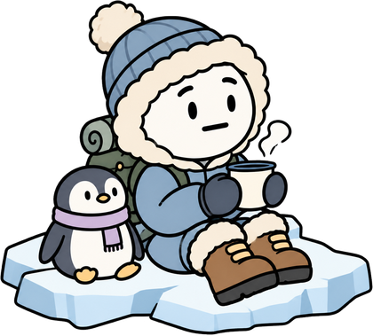

Exploratrice n° 1
Océane Doret
C'est la fin du voyage ! Avant de rentrer, faisons une pause sur la banquise pour retrouver d'où viennent toutes les informations de ce site.
Un chocolat chaud et on relit notre carnet de bord ?

Exploratrice n° 1
Océane Doret
Exploratrice n° 2
Jules Dor
Nos sources, étape par étape, dans l'ordre du voyage :
Étape 1 · La campagne
ARPANET
Wikipédia
https://fr.wikipedia.org/wiki/ARPANET
How the Internet found its language: the story of TCP/IP
LinkedIn
https://fr.linkedin.com/pulse/how-internet-found-its-language-story-tcpip-kirti-singh-gkwmc?tl=fr
Petite histoire du World Wide Web
Cogitime
https://www.cogitime.fr/petite-histoire-du-world-wide-web/
Étape 2 · La ville
Tout savoir sur les URL : définition et fonctionnement
Les redirections HTTP 301 et 302 : permanentes ou temporaires
Alsacréations
https://www.alsacreations.com/article/lire/1963-Les-redirections-HTTP-301-et-302-permanentes-ou-temporaires.html
Étape 3 · La montagne
Le système des noms de domaine
ICANN
https://www.icann.org/resources/pages/dns-2022-09-13-fr
Tout se qu'il faut savoir sur les noms de domaine
Afnic
https://www.afnic.fr/en/associating-excellence/who-we-are/afnic-in-brief/
Étape 4 · La mer
Web Standards (normes web)
FAQ WHATWG
WHATWG
https://whatwg.org/faq
Étape 5 · La savane
The Open Source Foundation for Application Security
OWASP Foundation
https://owasp.org/
Téléchargez l’app Safeonweb et appliquez les conseils
Police Fédérale belge
https://docs.google.com/document/d/19kbHLSn5z4TBO2N-ZwwCh7ugKx7L1Cd9Jr3GmlfWMZ8/edit?tab=t.0
Nous avons utilisé deux assistants d'intelligence artificielle pendant ce projet :
Aide à la structure du site, à l'écriture du code HTML, CSS et JavaScript, à la création des mini-jeux et des illustrations (dessins de la timeline, montagne, îles…), et à la mise en forme de nos recherches.
Habillage de notre personnage pour chaque étape du voyage : en voiture, en randonneur, à la plage, en explorateur et sur la banquise.
Polices Nunito et Patrick Hand
Google Fonts
https://fonts.google.com/
Hébergement du site
Vercel
https://vercel.com/